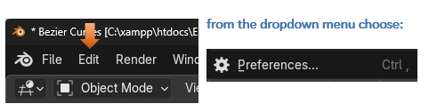
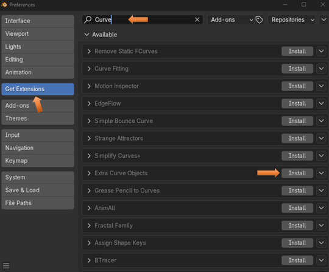
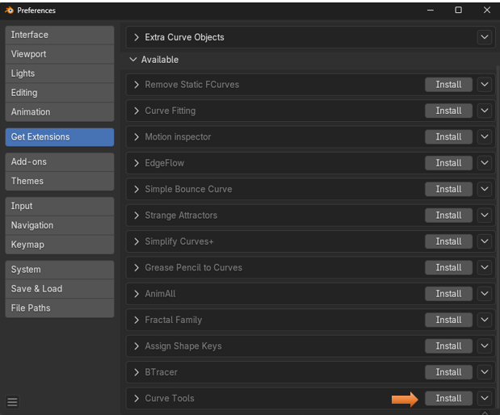
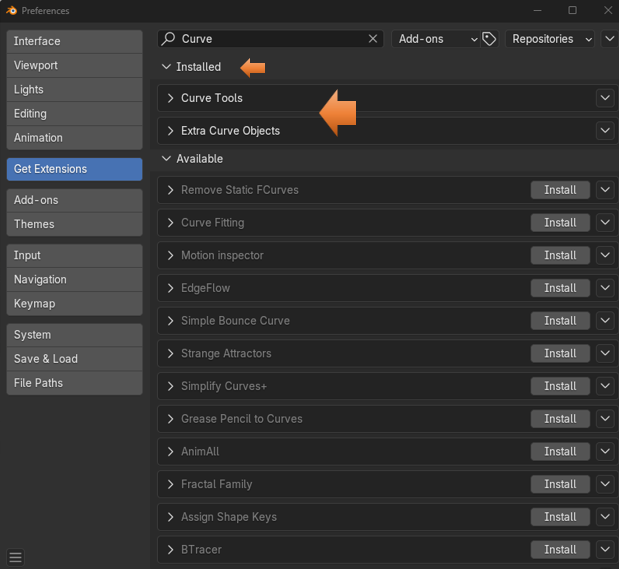
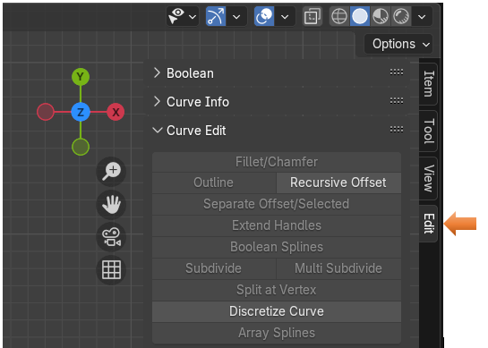
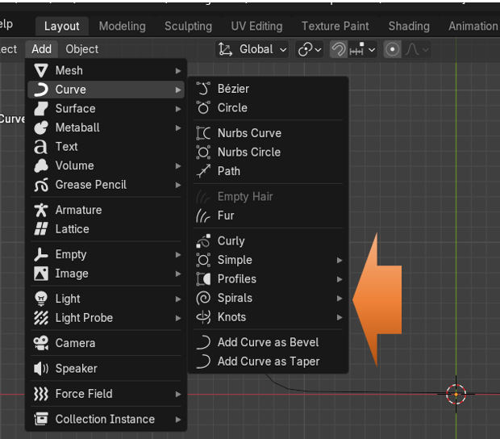

~ Extensions~
3/1/2025
Adding The Two Curve Extensions
To get into more complex curves we will need to add a couple of extensions. These used to be an add-ons, but with the latest versions of Blender, you will now need to go to Extensions to add them.
Adding The Two Curve Extensions
To get into more complex curves we will need to add a couple of extensions. These used to be an add-ons, but with the latest versions of Blender, you will now need to go to Extensions to add them.
In Object mode, from the Edit menu, go to Preferences.

Go to Get Extensions- Put Curve in the top search bar. Choose to Install Extra Curve Objects

Now you can choose to Install Curve Tools.
Note- The Curve Tools option was not available in this list in Extensions until after you have Installed the Extra Curve Objects.

You will notice that after each Installation the Extensions names will be removed from the Extension list of Available Extensions and moved to the top where it says Installed.

You will know that you have these tools installed because if you press the N key to view your tools at the right on the viewport, you will notice an extra tab.

Also, you will know you have the extra Curve objects installed if you go to the Add menu for Curves from the Object Workspace and you see the Extra curve objects.
